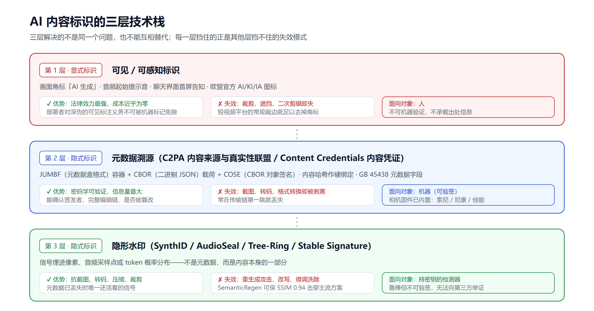
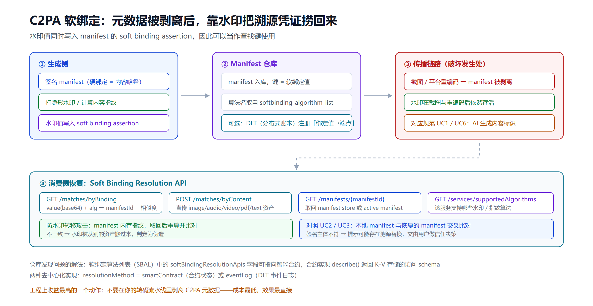
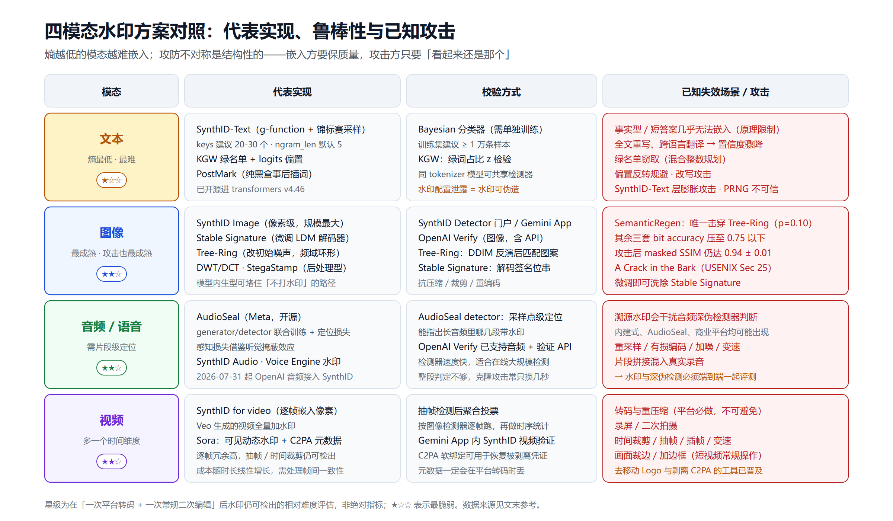

给 AI 生成内容加水印并校验：从 GB 45438 到 C2PA、SynthID、AudioSeal 的工程落地手册
2026 年 7 月 20 日，欧盟委员会发布了 AI Act（《人工智能法案》，Regulation (EU) 2024/1689，欧盟统一规制人工智能的核心法规）第 50 条透明度义务的最终指南。留给全欧洲所有跑聊天机器人、生成 AI 图片、发布 AI 文本的公司的时间，是 11 天——8 月 2 日起，违规上限是 1500 万欧元或全球年营收的 3%，取高者。
同一份文件里还藏着一个更尴尬的事实：分析这份行为准则的法律研究者 Natalia Garina 指出，目前没有任何一种标记技术能同时满足第 50 条提出的四项要求——有效性、互操作性、鲁棒性、可靠性。而用来衡量"是否达标"的通用评测基准，也还不存在。
所以行为准则给出的答案不是"选一个最好的技术"，而是强制分层：元数据 + 隐形水印 + 日志三者并用。不是因为哪一层管用，而是因为每一层能挡住其他层挡不住的失效模式。
中国这边更早。《人工智能生成合成内容标识办法》2025 年 9 月 1 日就已生效，配套的强制性国标 GB 45438-2025 同日实施。云厂商的标识能力早就产品化到了 API 层面。
这篇文章不谈立法哲学，只谈工程：四种模态各自怎么打水印、怎么校验、会被什么攻击打穿、以及一个能真正跑起来的最小技术栈长什么样。
一、先把三件事分清楚：可见标识、元数据溯源、隐形水印
绝大多数关于"AI 水印"的混乱，都来自把三种完全不同的机制混为一谈。它们的信任模型、成本、失效方式都不一样。

第一层：可见/可感知标识（显式标识）
在画面角标打"AI 生成"、在音频开头加提示音、在聊天界面首屏告知"你正在与 AI 对话"。技术成本几乎为零，法律效力最强——欧盟明确规定，部署者对深度伪造的可见标注义务，不能用提供者的机器可读标记来免除，你必须自己再打一个人能看见的标。
代价是它同时也最容易被裁掉。裁剪、遮挡、二次剪辑，一分钟的事。
第二层：元数据溯源（C2PA / Content Credentials）
C2PA（Coalition for Content Provenance and Authenticity，内容来源与真实性联盟）是由 Adobe、微软等发起的行业标准组织，Content Credentials（内容凭证）是它对外的产品化叫法——两者常被混用，前者指标准与组织，后者指用户看到的那枚可点开查看出处的标记。
在文件里嵌一份密码学签名的出处记录：谁生成的、什么模型、经过哪些编辑、谁签的名。技术栈是三层叠起来的：
- JUMBF（JPEG Universal Metadata Box Format，JPEG 通用元数据盒格式）容器——负责把溯源数据装进媒体文件而不破坏原文件格式
- CBOR（Concise Binary Object Representation，简洁二进制对象表示法）载荷——类似二进制版的 JSON，体积更小
- COSE（CBOR Object Signing and Encryption，CBOR 对象签名与加密）签名——给上面这份载荷做密码学签名
内容哈希作为硬绑定（hard binding，把凭证与具体文件字节强绑死，文件一改哈希就不匹配）。
它的信息量最丰富，而且可验证——你能验签，能确认签发者是不是 OpenAI，能看到完整编辑链。这是其他两层都做不到的。
它的死穴是一句话就能说完：截图一下就没了。平台重新编码、格式转换、缩放，元数据经常在传输链的第一跳就被剥离。OpenAI 自己在公告里也直接承认了这一点。
第三层：隐形水印（SynthID / AudioSeal / Tree-Ring 等）
先交代这几个名字：SynthID 是 Google DeepMind 的隐形水印工具集（覆盖图像、音频、文本、视频四种模态），AudioSeal 是 Meta 开源的音频水印方案，Tree-Ring 是学界提出的扩散模型水印方法。三者都不是缩写，是各家的方案名。
把信号直接埋进像素、音频采样点或 token（词元，语言模型处理文本的最小单位，可能是一个字、一个词或词的一部分）概率分布里。它不是元数据的一部分，而是内容本身的一部分——所以截图、转码、压缩之后往往还活着。
它的问题反过来：鲁棒但不可验证。水印能告诉你"这东西被某个系统标记过"，但它不带签名，不带编辑历史，没有密钥的第三方读不出来，也无法向别人证明结论。而且它有真实的攻击面（第五节会讲，比想象的严重）。
三层的取舍非常清楚：可见标识给人看、元数据给机器验、隐形水印给"元数据已经丢了"的场景兜底。任何只做一层的方案，都会在某个可预见的场景里失效。
二、合规基线：GB 45438 与 AI Act 第 50 条各要什么
先把两边的硬性要求列清楚，这决定了你的技术选型下限。
中国：显式 + 隐式双轨
《标识办法》与 GB 45438-2025 的核心是两分法：
- 显式标识：添加到生成内容或交互界面中，以文字、声音、图像等形式呈现、能被用户明确感知的标识
- 隐式标识：采用技术措施添加、不易被用户感知的标识，主要落在文件元数据与数字水印上
工程上最实际的一点是：这件事已经不需要你自己从零实现了。腾讯云对象存储/数据万象提供了独立的「AIGC（AI Generated Content，人工智能生成内容）元数据标识」能力，图片支持 JPG/JPEG、PNG、WebP、AVIF，另有音视频与文档的对应接口，元数据字段包含内容生产平台标识、内容传播平台标识等，支持三种接入方式：
- 上传时同步写入
- 对已存文件补写
- 配置数据工作流自动写入（零代码）
同时还提供反向的查询接口——这一点在"内容传播平台"角色下很重要：你不只要给自己生成的内容打标，还要能识别流入你平台的内容是否已带 AIGC 元数据。
值得注意的是，"AIGC 元数据标识"和"盲水印"在这些云产品里是两个独立功能。这恰好印证了第一节的分层结论：元数据和水印解决的不是同一个问题，不能互相替代。
欧盟：义务按角色切分
AI Act 第 50 条把责任切给了两类主体，这是最容易踩坑的地方。
提供者（provider）的义务是技术标记：音频、图像、视频、文本输出必须带上机器可读的标记，使其可被检测为人工生成或篡改。明确的豁免范围包括：
- 短数字序列
- 源代码
- 闭环工业场景内的内容
- 不实质改变文档含义的辅助功能（拼写检查、语法纠正）
部署者（deployer）的义务有两条，且都是"人能看见"的：
- 符合深度伪造法律定义的内容，首次呈现时就要清晰可感知地披露，与是否有欺骗意图无关
- 用生成式 AI 产出或分发公共利益议题文本（政治、公共行政、执法、公共健康、环境保护）必须标注，除非经过实质人工审核——拼写检查和排版不算，同行评议、专业验证、法律上可追责的编辑实体做出的编辑决策才算
深度伪造的三要件是累积判定的：与真实对象高度相似 + 该对象真实存在或可能存在 + 内容有能力让观看者误以为真实。会说话的动物、明显不可能的想象场景不构成深伪；色彩校正、降噪、压缩不触发义务。艺术和讽刺作品的义务被削弱为"以不损害作品呈现效果的方式披露"。
时间线上有两个坑：
- 第 50 条大部分义务（聊天机器人告知、深伪标注、公共利益文本标注）自 2026 年 8 月 2 日起无例外适用
- 只有"既有系统的机器可读标记能力"这一条，宽限到 2026 年 12 月 2 日；但这个宽限来自 Digital Omnibus（数字综合简化包，欧盟为简化数字领域现行法规而推出的一揽子修订提案），截至 2026 年 7 月中旬尚未在官方公报正式刊发，在刊发前该延期并不具备法律约束力
管辖范围沿用 GDPR（General Data Protection Regulation，《通用数据保护条例》）的逻辑：只看你的输出是否在欧盟境内被使用，不看公司注册地和服务器在哪。
欧盟还发布了 24 种语言的官方标注图标（英文 AI、德文 KI、法文 IA 等），自愿使用。此外行为准则是分节可签的——提供者部分和部署者部分可以分开签署，签署带来合规推定，把举证责任推向监管方。
三、文本水印：熵最低，所以最难
文本是四种模态里最难打水印的，原因很本质：可调整的冗余空间最小。改一个像素没人看得出来，改一个词可能就改了意思。
KGW 路线：绿名单 + 统计检验
KGW 是业界对最早那套 LLM（Large Language Model，大语言模型）文本水印方案的惯用称法，取自其论文作者姓氏首字母。
最经典的思路：用密钥把词表切成 green list（绿名单）和 red list（红名单），生成时给 green token 的 logits（模型在归一化成概率之前输出的原始分数）加一个偏置 δ，让模型更倾向选绿词。检测端不需要模型，只需要密钥——统计一段文本里绿词的占比，做 z 检验（衡量观测值偏离随机期望多少个标准差的统计检验），显著超出随机期望就判定为水印文本。
优点是简单、检测极快、无需训练。缺点是偏置会损伤生成质量，而且攻击面直白。
SynthID-Text：锦标赛采样
Google DeepMind 的方案更精巧，也是目前唯一开源且工业级的文本水印实现（已进 transformers v4.46，论文发在 Nature）。
核心机制是用一个伪随机函数（论文里叫 g-function）在生成时调制 token 分布，通过锦标赛采样（tournament sampling）在候选 token 之间做多轮比较。最终"模型自己的词选择 + 被调整过的概率分数"共同构成水印图案，检测时把这个分数图案与"有水印/无水印"的期望分布做比对。
配置只有两个核心参数，工程上很好上手：
from transformers import (
AutoModelForCausalLM,
AutoTokenizer,
SynthIDTextWatermarkingConfig,
)
tokenizer = AutoTokenizer.from_pretrained("repo/id")
model = AutoModelForCausalLM.from_pretrained("repo/id")
watermarking_config = SynthIDTextWatermarkingConfig(
keys=[654, 400, 836, 123, 340, 443, 597, 160, 57], # 建议 20-30 个随机整数
ngram_len=5, # 至少 2，默认 5
)
output_sequences = model.generate(
**tokenizer(["your prompts here"], return_tensors="pt"),
watermarking_config=watermarking_config,
do_sample=True,
)
两个参数的取舍要理解清楚：
keys：用于在词表上计算 g-function 分数，官方建议 20 到 30 个唯一随机整数，在可检测性与生成质量之间取平衡ngram_len：n-gram（n 元组，连续 n 个 token 构成的片段）长度，越大越容易检出，但越脆弱（对文本改动更敏感），默认 5
有三个容易被忽略的工程约束：
- 水印配置必须私密保存。配置泄露等于水印可被他人复现，也就等于可被伪造
- 检测器需要单独训练。每套配置都要配一个检测器，官方给的是 Bayesian detector（贝叶斯检测器），建议训练集至少 1 万条样本，且要有水印/无水印、训练/测试四路划分
- 同 tokenizer（分词器，把文本切成 token 的组件）的模型可以共享水印配置与检测器，前提是检测器的训练集覆盖了所有共享该水印的模型
官方承认的两个失效场景
这两条直接决定了文本水印能不能用在你的业务上：
- 事实型回答几乎无法嵌入。"法国首都是哪"这类提示词，或者"背诵一首华兹华斯的诗"这类几乎没有变化空间的请求，调整 token 分布就等于损伤准确性，所以水印强度会显著下降
- 彻底改写或翻译会让置信度大幅下降。轻度改写、裁剪片段、改几个词还能扛住，全文重写或跨语言翻译基本就废了
换句话说：文本水印适合长文、创意类输出，不适合短答案和知识问答。如果你的产品主要输出结构化答案或事实查询结果，别指望文本水印，走元数据和日志更实际。
攻击侧：这是四种模态里最热闹的战场
- 改写攻击：有研究表明，只需拿到黑盒水印模型的有限数量输出，就能大幅提升改写攻击的成功率，让水印彻底失效
- 绿名单窃取：把攻击形式化为带约束的混合整数规划问题，在攻击者无先验知识、无检测器 API 访问、不了解模型参数与水印方案的极端场景下，仍能窃取绿名单并移除水印
- 偏置反转规避（bias inversion）：直接针对"统计上绿词过表达"这个检测原理做反向操作
- 针对 SynthID-Text 的层膨胀攻击：有理论分析证明其均值分数对锦标赛层数的增加存在固有脆弱性，并据此设计了 layer inflation attack
- PRNG 假设被打破：现有方案（KGW、Unigram、DipMark 等同类水印方案）的安全性都建立在"底层 PRNG（Pseudo-Random Number Generator，伪随机数生成器）可信"之上，有研究给出了在该假设失效时"保持内容完整性且不可察觉"的攻击
还有一条工程上更实用的路子：PostMark 走的是纯黑盒事后水印——用语义嵌入决定一组与输入相关的词，在解码完成后插入文本。不需要访问 logits，因此不必由模型提供方实现，第三方平台也能用。
四、图像水印：技术最成熟，攻击也最成熟
图像是水印研究最密集的领域，方法大致分两类。
后处理型：生成完再打
- 频域嵌入（DWT 离散小波变换 / DCT 离散余弦变换，两种把图像从像素域转到频率域的数学变换，水印埋在频率系数里而非直接改像素）：经典数字水印技术，
invisible-watermark这类库开箱可用，Stable Diffusion 社区的默认选项，抗压缩尚可，抗几何变换一般 - StegaStamp：编码器-解码器架构，抗打印-拍摄这类物理信道的能力较强
优点是与生成模型解耦，任何图片都能打。缺点是作为一个独立的后处理步骤，很容易在流水线里被"忘记"或被绕过。
模型内生型：让模型只能生成带水印的图
- Stable Signature：微调 LDM（Latent Diffusion Model，潜在扩散模型，Stable Diffusion 系列的底层架构）的解码器，让二进制签名"长"进这个解码器产出的所有图像。对开源模型特别有意义——你没法要求用户老实调用打水印的后处理，但你可以让模型本身没有不打水印的输出路径
-
Tree-Ring：思路很不一样，它不改最终图像，而是改初始噪声向量，在频域埋一个环形图案，从而影响整个采样过程。检测靠 DDIM（Denoising Diffusion Implicit Models，去噪扩散隐式模型）反演——把成品图沿采样过程反推回初始噪声，再匹配图案。因为水印不是后期叠加的，所以人眼完全不可见，而且对多种攻击表现出很强的鲁棒性
-
SynthID Image：直接把水印嵌入像素，官方说法是抗压缩、裁剪、重编码。这是目前部署规模最大的实现——据引述 Google I/O 2026 的数据，SynthID 累计标记内容已超 1000 亿条（但这个数字只覆盖参与该体系的生成器）
移除攻击：重生成是水印的天敌
这两年的攻击进展相当猛，值得每个做水印方案的人认真看：
- SemanticRegen：三阶段、无需标签的攻击。用 VLM（Vision Language Model，视觉语言模型）生成细粒度描述 → 零样本分割抠出前景 → 只对背景做 LLM 引导的扩散重绘。在 1000 条提示词 × 4 套水印系统（TreeRing、StegaStamp、StableSig、DWT/DCT）上测试，它是唯一击穿语义型 Tree-Ring 水印的方法（p 值 0.10 > 0.05，即检测器已无法在统计上区分该图与未打水印的图），其余三套的 bit accuracy（比特准确率，正确恢复出的水印二进制位比例）被压到 0.75 以下，同时 masked SSIM（Structural Similarity Index，结构相似性指数，1.0 为完全一致）保持在 0.94 ± 0.01——也就是说图看起来几乎没变
- A Crack in the Bark（发表于 USENIX Security '25，信息安全领域四大顶会之一）：专门针对 Tree-Ring，利用公开可得的知识实施移除
- 微调移除 Stable Signature：Stable Signature 曾被认为对移除攻击鲁棒，但通过微调扩散模型即可把水印洗掉
还有一个有意思的发现：有研究指出 Tree-Ring 的超强鲁棒性，一部分并非来自"图案匹配"本身，而是来自水印过程无意引入的分布偏移。这提醒我们，一些看起来惊艳的鲁棒性数字，可能建立在并不牢固的机制之上。
攻防的不对称是结构性的：嵌入方要同时保画质、保语义、保水印；攻击方只需要"看起来还是那张图"。SemanticRegen 这类保留显著对象、只重绘背景的手法，恰好卡在这个不对称的缺口上。
五、音频水印：AudioSeal 的样本级定位
音频水印有个和其他模态不同的需求：一段音频里往往只有一部分是 AI 生成的。语音克隆攻击的典型形态不是整段伪造，而是在真实录音里替换几秒关键内容。只回答"这段音频有没有水印"是不够的。
AudioSeal（Meta，已开源）就是冲着这个需求设计的：
- generator（嵌入器）/ detector（检测器）联合训练，配合 localization loss（定位损失，让检测器不只判断有无、还要输出位置的训练目标），实现到采样点级别的定位——能指出长音频里哪几段是带水印的
- 感知损失设计借鉴了听觉掩蔽效应（auditory masking），把水印藏在人耳本来就听不清的地方，因此不可感知性更好
- 检测器速度极快，适合大规模在线检测场景
工程接入很简单，pip install audioseal 后 generator 负责嵌入、detector 负责检测与定位，模型权重在 Hugging Face 上。
商业侧的动作：OpenAI 早在 Voice Engine 时期就有音频水印；2026 年 7 月 31 日起，ChatGPT 与 OpenAI API 生成的受支持音频加入了 SynthID 水印，公开验证工具同步支持音频文件，并开放了验证 API，让开发者能把出处校验接进自己的流水线。
一个反直觉的坏消息
有研究（arXiv 2606.23335，arXiv 是学术界通用的预印本平台，论文未必经过同行评议）指出：溯源水印会干扰音频深伪检测器的判断。无论水印是内建在语音生成模型里（如 Chatterbox）、来自专用技术（如 AudioSeal），还是由商业平台部署（如 ElevenLabs），都可能出现这个问题。
这是一个典型的"两套安全机制互相打架"的场景。如果你的系统里同时跑水印和深伪检测，必须把两者放在一起做端到端评测，不能各自看指标。
六、视频水印：逐帧嵌入与时序攻击
视频的方案本质上是图像方案的扩展。SynthID for video 的做法就是把图像水印方法应用到每一帧的像素上，Veo 生成的视频全量加水印。
逐帧的好处是冗余度高：抽掉一些帧、裁剪一段时间轴，剩下的帧还带着水印。坏处是计算成本随时长线性增长，而且要处理帧间一致性——如果每帧水印独立，帧间闪烁可能被观察到。
商业实践里，Sora 走的是"可见动态水印 + C2PA 元数据"的组合。但这个组合的实际效果并不理想：The Verge 的报道认为 Sora 反而暴露了深伪检测体系的脆弱——绕过移动 Logo 与剥离 C2PA 元数据的工具已经相当普及。
视频特有的攻击面比图像多一个维度：
- 转码与重压缩（几乎不可避免，平台一定会做）
- 录屏与二次拍摄
- 时间裁剪、抽帧、插帧、变速
- 画面裁剪与加边框（短视频平台的常规操作）
结论也很直接：视频只靠可见水印必然失守，只靠元数据必然被剥离。逐帧隐形水印是目前唯一能在"经过一次平台转码 + 一次二次剪辑"后还留下信号的层。
七、C2PA 软绑定：把可验证性和鲁棒性缝起来
前面反复出现同一个矛盾：元数据可验证但脆弱，水印鲁棒但不可验证。C2PA 的 soft binding（软绑定）机制是目前唯一把两者缝在一起的工程答案，也是这篇文章里我最推荐仔细读原规范的部分。

思路是：把隐形水印或内容指纹当作一个查找键。
生成时，除了把签名 manifest（溯源清单，C2PA 里承载全部出处声明并带签名的那份数据结构）嵌进文件（硬绑定，内容哈希），再往内容里打一个隐形水印，并把这个水印值作为 soft binding assertion（软绑定声明，manifest 里专门记录"本内容的水印/指纹值是多少"的那条声明）记录在 manifest 里，同时把 manifest 存进一个 manifest 仓库。
之后哪怕平台把元数据剥得一干二净，消费端只要能从像素/音频里读出水印，就能拿这个值去仓库里把 manifest 捞回来。
规范定义了一套标准的 Soft Binding Resolution API，端点很简洁：
GET /matches/byBinding— 给一个软绑定值（base64 编码，一种把二进制数据转成纯文本字符的编码方式 + 算法标识），返回匹配的 manifest 标识符列表，带 0-100 的相似度分数POST /matches/byBinding— 软绑定值太长塞不进 URL 时用POST /matches/byContent— 直接上传资产文件（支持 image、audio、video、application 如 PDF、model、text），由服务端算软绑定GET /manifests/{manifestId}— 取回 manifest（默认返回整个 manifest store，可只要 active manifest）GET /services/supportedAlgorithms— 查询该服务支持哪些水印/指纹算法
算法名不是自己起的，要走官方维护的 soft binding algorithm list（GitHub 上的 c2pa-org/softbinding-algorithm-list），想让自己的水印算法被引用，需要申请加入这个列表。这是互操作性的关键——没有共同的算法命名，各家的水印就是各自的孤岛。
规范还考虑了两个更深的问题：
一是 manifest 仓库的发现问题。 如果不知道该去哪个仓库查怎么办？规范设计了去中心化的联邦查询：用 DLT（Distributed Ledger Technology，分布式账本技术，区块链是其中一类实现）做一个 K-V（Key-Value，键值）存储，键是软绑定值，值是实现了 Resolution API 的端点 URI（Uniform Resource Identifier，统一资源标识符）（可选带 manifest ID）。支持两种实现——把 K-V 存在智能合约状态里（querySmartContract），或者写进 DLT 的事件日志里（queryEventLog）。智能合约需实现一个 describe() 方法返回描述访问方式的 JSON schema（用 JSON 格式书写的数据结构约定，说明字段名、类型与是否必填）。
二是水印转移攻击。 攻击者可以把 A 图的水印"搬"到 B 图上，冒用 A 的溯源信息。规范给的对策是水印 + 指纹组合：把资产指纹也存进 manifest，取回 manifest 后重新计算查询资产的指纹并比对，不一致就说明水印被搬过。
规范里 6 个用例值得完整读一遍，其中 UC6（UC 即 Use Case，用例；UC6 是规范里编号第 6 个场景）就是专门讲 AI 生成内容标识的：GenAI（Generative AI，生成式人工智能）工具因为所在国的监管要求写入 manifest，作者再加水印；恶意用户截图后发到不支持 C2PA 的社交平台，元数据被剥离，但水印在截图和平台重编码后依然存活；消费端浏览器检测到水印、确认算法在 C2PA 软绑定算法列表里、显示 Content Credentials 图钉、点开取回 manifest 并标记为 AI 生成。
生态现状：C2PA 由 Adobe、纽约时报、微软、BBC 等共建，索尼、尼康、佳能的相机固件已内置。OpenAI 于 2026 年 5 月 19 日宣布成为 C2PA Conforming Generator Product（C2PA 合规生成器产品，即通过官方一致性认证、其签发的凭证可被生态内其他工具信任读取的生成方），同时与 Google 合作把 SynthID 接进 ChatGPT、Codex 与 API 生成的图像——明确说明了理由：C2PA 携带丰富上下文，SynthID 在元数据不存活时保住信号，两者互为补充，比任何单层都更有韧性。
这是目前最值得参考的架构决策：头部厂商已经放弃了"单一技术足够"的想法。
八、校验侧：怎么设计一个不说谎的检测服务
生成侧打标只是一半。校验侧的设计更容易出事，因为误判的代价是不对称的。
三种校验信号的可靠性排序
- 验签 C2PA manifest：最可靠。密码学可验证，能确认签发者、编辑链、是否被篡改。缺点是存在率低（大量内容根本没有或已丢失）
- 检测隐形水印：中等可靠。存在率比元数据高，但需要密钥/检测器，只能覆盖参与该水印体系的生成器
- 事后分类器（无水印的纯判别）：最不可靠。分类器往往只在特定任务上表现好，跨平台、跨内容类型时性能不稳定，把人写的内容误判成 AI 生成会造成真实伤害
OpenAI 那条工程原则值得抄
OpenAI 在公开验证工具的设计上明确写了：检测不到信号时，不给结论。如果没检出元数据也没检出水印，工具不会断言这张图不是 OpenAI 生成的——因为信号可能被剥离了。
这条原则应该成为所有校验服务的默认行为。返回值不该是二元的，至少要三态：
CONFIRMED_AI # 检出有效签名或水印，可给出出处
NO_SIGNAL # 未检出任何信号，不构成任何结论
INVALID # 检出信号但验签失败或水印损坏，需人工介入
把 NO_SIGNAL 渲染成"这是人类创作的内容"，是这个领域最常见也最有害的产品设计错误。
一个待解的矛盾
欧盟行为准则草案还建议：提供者实现的检测器不应只能检测嵌入的水印，也应该能识别未标记的合成内容。
这在技术上等于要求做到目前做不到的事——那正是事后分类器的领域，而事后分类器的可靠性问题恰恰是水印方案存在的理由。这个循环目前没有解，只能靠"多信号加权 + 保守输出"缓解。
九、落地清单：一个最小可用的标识与校验栈
把上面所有内容压成可执行的动作。

生成侧（按角色区分）
如果你是模型/工具提供方：
- 图像/视频：接入 C2PA 写入签名 manifest（硬绑定用内容哈希）+ 隐形水印（SynthID 或自研），把水印值作为 soft binding assertion 写进 manifest
- 音频：AudioSeal 或商业方案，确认支持片段级定位而非整段判定
- 文本：长文与创意输出用 SynthID-Text，配置私密保存、单独训练检测器；短答案/事实查询别指望水印，走元数据与日志
- 中国业务：显式标识 + 文件元数据（GB 45438 要求的字段）双管；元数据可直接用云厂商 API，别自己重复实现格式解析
- 欧盟业务：注意豁免边界——短数字序列、源码、闭环工业场景、不改变含义的拼写语法辅助不在范围内
如果你是内容平台/传播方：
- 不要剥离 C2PA 元数据。转码流水线里显式保留 manifest，这是成本最低、收益最大的一个动作
- 入站检测：读取 AIGC 元数据与水印，对识别出的 AI 内容按法规补充传播平台标识
- 深度伪造：欧盟场景下你有独立的可见标注义务，提供者打的机器可读标记不能替你免责
- 公共利益议题的 AI 文本：要么走真人编辑审核（拼写检查不算），要么标注
校验侧
- 三态输出，永远不要把"无信号"渲染成"人类创作"
- 多信号加权：manifest 验签 > 水印检出 > 分类器打分，且分类器结论必须标注不确定性
- 水印 + 指纹组合，防水印转移攻击
- 如果同时跑水印和深伪检测，端到端一起评测——它们可能互相干扰
必须在设计阶段就承认的事
- 没有任何单一技术满足四项监管要求，评测基准也还不存在，所以分层是唯一选项
- SemanticRegen 这类重生成攻击已经能在保持视觉质量的前提下击穿主流图像水印，把水印当成"防不住动机明确的攻击者"的工具来定位，别当成防伪
- 文本水印在事实型短输出上基本无效，这是原理限制而非实现缺陷
- 你的水印配置就是你的密钥，泄露等于水印可被伪造
小结
AI 内容水印在 2026 年的状态可以概括为一句话：法规要求已经落地，技术却还没有一个能独立达标的方案。
这不是拖延的理由，而是架构的输入条件。可行的路径已经很清晰——头部厂商用行动给出了答案：OpenAI 同时接入 C2PA 与 Google 的 SynthID，欧盟行为准则强制要求元数据 + 水印 + 日志分层，C2PA 用软绑定把"可验证但脆弱"的元数据和"鲁棒但不可验证"的水印缝在一起。
真正需要在团队里达成共识的，是三条心态上的调整：
- 水印不是防伪，它是提高滥用成本的工具，不要对动机明确的攻击者抱有幻想
- 校验服务的默认输出不该是二元判断，"检测不到"不等于"不是 AI 生成"
- 分层不是过度设计，是当前技术条件下唯一诚实的架构
工程上最容易被忽略、但收益最高的一个动作，其实是最简单的那个：在你的媒体处理流水线里，别再剥离 C2PA 元数据了。
免责声明
本文内容基于公开资料整理，仅供技术研究与工程参考，不构成法律意见。涉及监管合规的具体判断（包括但不限于是否落入 EU AI Act 第 50 条适用范围、显式与隐式标识的具体实现是否满足 GB 45438-2025 要求、Digital Omnibus 宽限期的法律效力状态），请咨询具备资质的法律专业人士，并以监管机构发布的最新正式文本为准。文中提及的技术方案、开源项目与云服务能力可能随版本更新而变化，实际接入前请核对官方文档。
参考来源
- Guidelines on transparency obligations for providers and deployers of AI systems — European Commission
- Article 50: Transparency obligations for providers and deployers of certain AI systems — EU AI Act Service Desk
- EU Finalizes AI Disclosure Rules as Watermarking Mandate Outpaces Technology — Tech Times
- The EU's AI Transparency Code of Practice, Explained — Tech Policy Press
- EU Icons for labelling AI-generated content — European Commission
- AI Act: EP approves simplification measures and "nudifier" app ban — European Parliament
- 人工智能生成合成内容标识办法（译本）— China Law Translate
- AIGC 图片元数据标识 — 腾讯云对象存储文档
- AIGC 音视频元数据标识 — 腾讯云对象存储文档
- Introducing SynthID Text — Hugging Face Blog
- SynthID: Tools for watermarking and detecting LLM-generated Text — Google AI
- Watermarking AI-generated text and video with SynthID — Google DeepMind
- Identifying AI-generated images with SynthID — Google DeepMind
- Scalable watermarking for identifying large language model outputs — Nature
- On Google's SynthID-Text LLM Watermarking System — arXiv
- Large Language Model Watermark Stealing With Mixed Integer Programming — arXiv
- LLM Watermark Evasion via Bias Inversion — arXiv
- Revisiting the Robustness of Watermarking to Paraphrasing Attacks — arXiv
- PostMark: A Robust Blackbox Watermark for Large Language Models — arXiv
- Tree-Ring Watermarks: Fingerprints for Diffusion Images that are Invisible and Robust — arXiv
- The Stable Signature: Rooting Watermarks in Latent Diffusion Models — arXiv
- Removing Watermarks with Partial Regeneration using Semantic Information (SemanticRegen) — arXiv
- A Crack in the Bark: Leveraging Public Knowledge to Remove Tree-Ring Watermarks — arXiv
- Removing Image Watermark from Diffusion Models — arXiv
- Rethinking Tree-Ring Watermarking for Enhanced Multi-Key Identification — arXiv
- AudioSeal: Proactive Detection of Voice Cloning with Localized Watermarking — arXiv
- facebookresearch/audioseal — GitHub
- How Provenance Marking Sabotages Audio Deepfake Detection — arXiv
- C2PA Soft Binding API — C2PA Specification 2.2
- c2pa-org/softbinding-algorithm-list — GitHub
- CAI Soft binding resolution API — Adobe Developer
- Advancing content provenance for a safer, more transparent AI ecosystem — OpenAI
- Provenance signals (Content Credentials, SynthID) in OpenAI-generated content — OpenAI Help Center
- Sora is showing us how broken deepfake detection is — The Verge
- Verify Google AI-generated images, videos and audio with SynthID — Google Support
- Best AI Image Detectors in 2026: Tools Tested and Ranked — fast.io
延伸阅读
- 深度伪造攻防：企业级防护指南 — 水印是溯源，深伪检测是判别，两者的配合与冲突
- LLM 护栏开源方案生产落地指南 — 内容标识属于输出侧治理的一环
- Langfuse LLM 与 Agent 可观测性指南 — 欧盟行为准则要求的"日志"层怎么做
- 企业 AI Agent 部署指南 — 标识义务在 Agent 链路里的落点
- PII 脱敏：Presidio 与 LiteLLM 实践 — PII 即 Personally Identifiable Information（个人身份信息），同属输出合规治理的工程实现
- MCP vs A2A：AI Agent 协议深度对比 — MCP（Model Context Protocol，模型上下文协议）与 A2A（Agent-to-Agent，智能体间通信协议），互操作性标准之争的另一个战场
推荐搭配装备
善其事，利其器。以下硬件能最大化你的AI体验👇
🔗 通过以上链接购买可支持本站持续运营 🙏